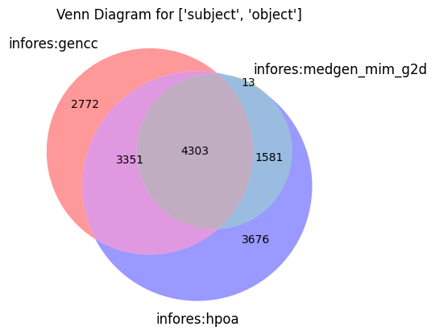
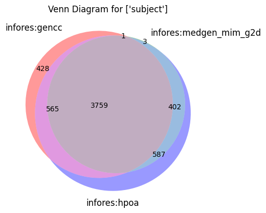
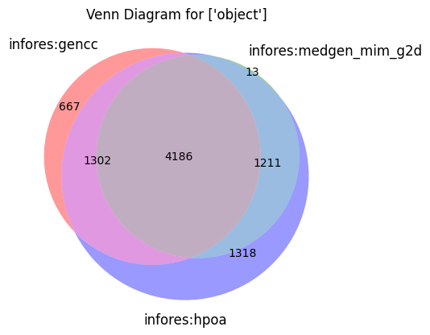
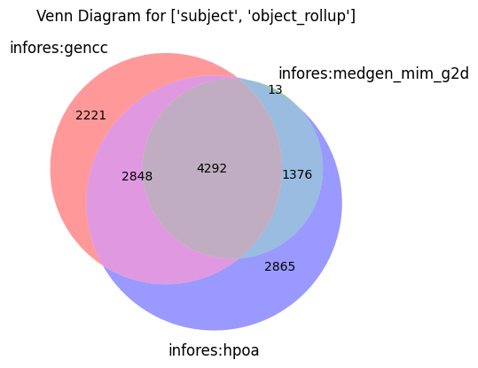

Analysis of differences with different gene to disease sources
Load all associations from multiple sources
The mondo-g2d input spec includes metadata about where to download
gencc
medgen_mim2gene
Note these use heterogeneous IDs, the spec includes normalizers for these
[1]:
from oaklib import get_adapter
[2]:
from oaklib.conf import CONF_DIR_PATH
adapter = get_adapter(CONF_DIR_PATH/ "mondo-g2d-input-spec.yaml")
[3]:
associations = list(adapter.associations())
[4]:
len(associations)
[4]:
106577
[5]:
from linkml_runtime.dumpers import json_dumper
[6]:
import pandas as pd
[7]:
def _as_dict(a):
obj = json_dumper.to_dict(a)
obj["subject_prefix"] = a.subject.split(":")[0]
obj["object_prefix"] = a.object.split(":")[0]
return obj
[8]:
df = pd.DataFrame([_as_dict(a) for a in associations])
df.to_csv("g2d.tsv", sep="\t", index=False)
[9]:
df
[9]:
| subject | predicate | object | primary_knowledge_source | aggregator_knowledge_source | original_object | original_subject | subject_prefix | object_prefix | subject_label | object_label | |
|---|---|---|---|---|---|---|---|---|---|---|---|
| 0 | HGNC:1952 | biolink:gene_associated_with_condition | MONDO:0007032 | infores:medgen_mim_g2d | infores:medgen_mim_g2d | OMIM:100100 | NCBIGene:1131 | HGNC | MONDO | NaN | NaN |
| 1 | HGNC:29216 | biolink:gene_associated_with_condition | MONDO:0024506 | infores:medgen_mim_g2d | infores:medgen_mim_g2d | OMIM:100300 | NCBIGene:57514 | HGNC | MONDO | NaN | NaN |
| 2 | HGNC:3690 | biolink:gene_associated_with_condition | MONDO:0007037 | infores:medgen_mim_g2d | infores:medgen_mim_g2d | OMIM:100800 | NCBIGene:2261 | HGNC | MONDO | NaN | NaN |
| 3 | HGNC:7773 | biolink:gene_associated_with_condition | MONDO:0007039 | infores:medgen_mim_g2d | infores:medgen_mim_g2d | OMIM:101000 | NCBIGene:4771 | HGNC | MONDO | NaN | NaN |
| 4 | HGNC:3689 | biolink:gene_associated_with_condition | MONDO:0007041 | infores:medgen_mim_g2d | infores:medgen_mim_g2d | OMIM:101200 | NCBIGene:2263 | HGNC | MONDO | NaN | NaN |
| ... | ... | ... | ... | ... | ... | ... | ... | ... | ... | ... | ... |
| 106572 | HGNC:12762 | NaN | MONDO:0013673 | GENCC:000110 | infores:gencc | NaN | NaN | HGNC | MONDO | WFS1 | Wolfram-like syndrome |
| 106573 | HGNC:12762 | NaN | MONDO:0013673 | GENCC:000102 | infores:gencc | NaN | NaN | HGNC | MONDO | WFS1 | Wolfram-like syndrome |
| 106574 | HGNC:12762 | NaN | MONDO:0013673 | GENCC:000101 | infores:gencc | NaN | NaN | HGNC | MONDO | WFS1 | Wolfram-like syndrome |
| 106575 | HGNC:29271 | NaN | MONDO:0030491 | ftp://ftp.ncbi.nlm.nih.gov/gene/DATA/mim2gene_... | infores:hpoa | OMIM:619644 | NCBIGene:57169 | HGNC | MONDO | ZNFX1 | NaN |
| 106576 | HGNC:29271 | NaN | MONDO:0030491 | GENCC:000101 | infores:gencc | NaN | NaN | HGNC | MONDO | ZNFX1 | immunodeficiency 91 and hyperinflammation |
106577 rows × 11 columns
[10]:
df.query("object == 'MONDO:0008426'")
[10]:
| subject | predicate | object | primary_knowledge_source | aggregator_knowledge_source | original_object | original_subject | subject_prefix | object_prefix | subject_label | object_label | |
|---|---|---|---|---|---|---|---|---|---|---|---|
| 699 | HGNC:10896 | biolink:gene_associated_with_condition | MONDO:0008426 | infores:medgen_mim_g2d | infores:medgen_mim_g2d | OMIM:182212 | NCBIGene:6497 | HGNC | MONDO | NaN | NaN |
| 15644 | HGNC:10896 | NaN | MONDO:0008426 | ftp://ftp.ncbi.nlm.nih.gov/gene/DATA/mim2gene_... | infores:hpoa | OMIM:182212 | NCBIGene:6497 | HGNC | MONDO | SKI | NaN |
| 15645 | HGNC:10896 | NaN | MONDO:0008426 | http://www.orphadata.org/data/xml/en_product6.xml | infores:hpoa | Orphanet:2462 | NCBIGene:6497 | HGNC | MONDO | SKI | NaN |
| 15646 | HGNC:10896 | NaN | MONDO:0008426 | GENCC:000101 | infores:gencc | NaN | NaN | HGNC | MONDO | SKI | Shprintzen-Goldberg syndrome |
| 15647 | HGNC:10896 | NaN | MONDO:0008426 | GENCC:000112 | infores:gencc | NaN | NaN | HGNC | MONDO | SKI | Shprintzen-Goldberg syndrome |
| ... | ... | ... | ... | ... | ... | ... | ... | ... | ... | ... | ... |
| 104537 | HGNC:10896 | NaN | MONDO:0008426 | GENCC:000111 | infores:gencc | NaN | NaN | HGNC | MONDO | SKI | Shprintzen-Goldberg syndrome |
| 104538 | HGNC:10896 | NaN | MONDO:0008426 | GENCC:000104 | infores:gencc | NaN | NaN | HGNC | MONDO | SKI | Shprintzen-Goldberg syndrome |
| 104539 | HGNC:10896 | NaN | MONDO:0008426 | GENCC:000106 | infores:gencc | NaN | NaN | HGNC | MONDO | SKI | Shprintzen-Goldberg syndrome |
| 104540 | HGNC:10896 | NaN | MONDO:0008426 | GENCC:000110 | infores:gencc | NaN | NaN | HGNC | MONDO | SKI | Shprintzen-Goldberg syndrome |
| 104541 | HGNC:10896 | NaN | MONDO:0008426 | GENCC:000102 | infores:gencc | NaN | NaN | HGNC | MONDO | SKI | Shprintzen-Goldberg syndrome |
98 rows × 11 columns
[11]:
df.query("aggregator_knowledge_source == 'infores:hpoa'")
[11]:
| subject | predicate | object | primary_knowledge_source | aggregator_knowledge_source | original_object | original_subject | subject_prefix | object_prefix | subject_label | object_label | |
|---|---|---|---|---|---|---|---|---|---|---|---|
| 5907 | HGNC:16391 | NaN | MONDO:0008905 | ftp://ftp.ncbi.nlm.nih.gov/gene/DATA/mim2gene_... | infores:hpoa | OMIM:212050 | NCBIGene:64170 | HGNC | MONDO | CARD9 | NaN |
| 5908 | HGNC:16391 | NaN | MONDO:0008905 | http://www.orphadata.org/data/xml/en_product6.xml | infores:hpoa | Orphanet:457088 | NCBIGene:64170 | HGNC | MONDO | CARD9 | NaN |
| 5911 | HGNC:21066 | NaN | MONDO:0009544 | ftp://ftp.ncbi.nlm.nih.gov/gene/DATA/mim2gene_... | infores:hpoa | OMIM:248000 | NCBIGene:51256 | HGNC | MONDO | TBC1D7 | NaN |
| 5915 | HGNC:14313 | NaN | MONDO:0033485 | ftp://ftp.ncbi.nlm.nih.gov/gene/DATA/mim2gene_... | infores:hpoa | OMIM:617895 | NCBIGene:28981 | HGNC | MONDO | IFT81 | NaN |
| 5916 | HGNC:6742 | NaN | MONDO:0014693 | ftp://ftp.ncbi.nlm.nih.gov/gene/DATA/mim2gene_... | infores:hpoa | OMIM:616564 | NCBIGene:8216 | HGNC | MONDO | LZTR1 | NaN |
| ... | ... | ... | ... | ... | ... | ... | ... | ... | ... | ... | ... |
| 106562 | HGNC:12731 | NaN | MONDO:0010294 | ftp://ftp.ncbi.nlm.nih.gov/gene/DATA/mim2gene_... | infores:hpoa | OMIM:300299 | NCBIGene:7454 | HGNC | MONDO | WAS | NaN |
| 106563 | HGNC:12731 | NaN | MONDO:0010294 | http://www.orphadata.org/data/xml/en_product6.xml | infores:hpoa | Orphanet:86788 | NCBIGene:7454 | HGNC | MONDO | WAS | NaN |
| 106567 | HGNC:12762 | NaN | MONDO:0013673 | ftp://ftp.ncbi.nlm.nih.gov/gene/DATA/mim2gene_... | infores:hpoa | OMIM:614296 | NCBIGene:7466 | HGNC | MONDO | WFS1 | NaN |
| 106568 | HGNC:12762 | NaN | MONDO:0013673 | http://www.orphadata.org/data/xml/en_product6.xml | infores:hpoa | Orphanet:411590 | NCBIGene:7466 | HGNC | MONDO | WFS1 | NaN |
| 106575 | HGNC:29271 | NaN | MONDO:0030491 | ftp://ftp.ncbi.nlm.nih.gov/gene/DATA/mim2gene_... | infores:hpoa | OMIM:619644 | NCBIGene:57169 | HGNC | MONDO | ZNFX1 | NaN |
40613 rows × 11 columns
[12]:
df.groupby(["subject", "object"])["aggregator_knowledge_source"].describe()
[12]:
| count | unique | top | freq | ||
|---|---|---|---|---|---|
| subject | object | ||||
| HGNC:10001 | MONDO:0007781 | 4 | 2 | infores:hpoa | 2 |
| HGNC:10004 | MONDO:0012033 | 50 | 3 | infores:gencc | 35 |
| HGNC:10006 | MONDO:0008493 | 17 | 3 | infores:hpoa | 8 |
| MONDO:0019107 | 10 | 3 | infores:hpoa | 6 | |
| HGNC:10008 | MONDO:0019107 | 4 | 2 | infores:hpoa | 2 |
| ... | ... | ... | ... | ... | ... |
| NCBIGene:105259599 | MONDO:0020796 | 2 | 2 | infores:medgen_mim_g2d | 1 |
| NCBIGene:109580095 | MONDO:0013517 | 2 | 2 | infores:medgen_mim_g2d | 1 |
| NCBIGene:111365204 | MONDO:0007630 | 2 | 2 | infores:medgen_mim_g2d | 1 |
| MONDO:0010932 | 2 | 2 | infores:medgen_mim_g2d | 1 | |
| NCBIGene:7467 | MONDO:0008684 | 2 | 2 | infores:medgen_mim_g2d | 1 |
15696 rows × 4 columns
[13]:
df.groupby(["subject_prefix", "object_prefix"])["aggregator_knowledge_source"].describe()
[13]:
| count | unique | top | freq | ||
|---|---|---|---|---|---|
| subject_prefix | object_prefix | ||||
| HGNC | MONDO | 105710 | 3 | infores:gencc | 60057 |
| OMIM | 719 | 2 | infores:hpoa | 405 | |
| Orphanet | 132 | 1 | infores:hpoa | 132 | |
| NCBIGene | MONDO | 16 | 2 | infores:medgen_mim_g2d | 8 |
[14]:
df.groupby(["subject_prefix", "object_prefix", "aggregator_knowledge_source"]).describe()
[14]:
| subject | predicate | object | ... | original_subject | subject_label | object_label | |||||||||||||||||
|---|---|---|---|---|---|---|---|---|---|---|---|---|---|---|---|---|---|---|---|---|---|---|---|
| count | unique | top | freq | count | unique | top | freq | count | unique | ... | top | freq | count | unique | top | freq | count | unique | top | freq | |||
| subject_prefix | object_prefix | aggregator_knowledge_source | |||||||||||||||||||||
| HGNC | MONDO | infores:gencc | 60057 | 4753 | HGNC:3690 | 246 | 0 | 0 | NaN | NaN | 60057 | 6155 | ... | NaN | NaN | 60057 | 4753 | FGFR3 | 246 | 60057 | 6151 | retinitis pigmentosa | 229 |
| infores:hpoa | 40068 | 5128 | HGNC:2200 | 130 | 0 | 0 | NaN | NaN | 40068 | 7527 | ... | NCBIGene:1280 | 130 | 40068 | 5128 | COL2A1 | 130 | 0 | 0 | NaN | NaN | ||
| infores:medgen_mim_g2d | 5585 | 3933 | HGNC:2200 | 14 | 5585 | 1 | biolink:gene_associated_with_condition | 5585 | 5585 | 5093 | ... | NCBIGene:1280 | 14 | 0 | 0 | NaN | NaN | 0 | 0 | NaN | NaN | ||
| OMIM | infores:hpoa | 405 | 385 | HGNC:4398 | 2 | 0 | 0 | NaN | NaN | 405 | 404 | ... | NCBIGene:2783 | 2 | 405 | 385 | GNB2 | 2 | 0 | 0 | NaN | NaN | |
| infores:medgen_mim_g2d | 314 | 305 | HGNC:18420 | 2 | 314 | 1 | biolink:gene_associated_with_condition | 314 | 314 | 314 | ... | NCBIGene:29072 | 2 | 0 | 0 | NaN | NaN | 0 | 0 | NaN | NaN | ||
| Orphanet | infores:hpoa | 132 | 111 | HGNC:7577 | 2 | 0 | 0 | NaN | NaN | 132 | 83 | ... | NCBIGene:4625 | 2 | 132 | 111 | MYH7 | 2 | 0 | 0 | NaN | NaN | |
| NCBIGene | MONDO | infores:hpoa | 8 | 5 | NCBIGene:105259599 | 3 | 0 | 0 | NaN | NaN | 8 | 8 | ... | NaN | NaN | 8 | 1 | - | 8 | 0 | 0 | NaN | NaN |
| infores:medgen_mim_g2d | 8 | 5 | NCBIGene:105259599 | 3 | 8 | 1 | biolink:gene_associated_with_condition | 8 | 8 | 8 | ... | NaN | NaN | 0 | 0 | NaN | NaN | 0 | 0 | NaN | NaN | ||
8 rows × 32 columns
[15]:
df.sort_values(["subject", "object"])
[15]:
| subject | predicate | object | primary_knowledge_source | aggregator_knowledge_source | original_object | original_subject | subject_prefix | object_prefix | subject_label | object_label | |
|---|---|---|---|---|---|---|---|---|---|---|---|
| 16423 | HGNC:10001 | NaN | MONDO:0007781 | ftp://ftp.ncbi.nlm.nih.gov/gene/DATA/mim2gene_... | infores:hpoa | OMIM:145500 | NCBIGene:8490 | HGNC | MONDO | RGS5 | NaN |
| 16424 | HGNC:10001 | NaN | MONDO:0007781 | GENCC:000106 | infores:gencc | NaN | NaN | HGNC | MONDO | RGS5 | essential hypertension, genetic |
| 47487 | HGNC:10001 | NaN | MONDO:0007781 | ftp://ftp.ncbi.nlm.nih.gov/gene/DATA/mim2gene_... | infores:hpoa | OMIM:145500 | NCBIGene:8490 | HGNC | MONDO | RGS5 | NaN |
| 47488 | HGNC:10001 | NaN | MONDO:0007781 | GENCC:000106 | infores:gencc | NaN | NaN | HGNC | MONDO | RGS5 | essential hypertension, genetic |
| 2684 | HGNC:10004 | biolink:gene_associated_with_condition | MONDO:0012033 | infores:medgen_mim_g2d | infores:medgen_mim_g2d | OMIM:608415 | NCBIGene:8787 | HGNC | MONDO | NaN | NaN |
| ... | ... | ... | ... | ... | ... | ... | ... | ... | ... | ... | ... |
| 7192 | NCBIGene:111365204 | NaN | MONDO:0007630 | ftp://ftp.ncbi.nlm.nih.gov/gene/DATA/mim2gene_... | infores:hpoa | OMIM:136550 | NaN | NCBIGene | MONDO | - | NaN |
| 2108 | NCBIGene:111365204 | biolink:gene_associated_with_condition | MONDO:0010932 | infores:medgen_mim_g2d | infores:medgen_mim_g2d | OMIM:600790 | NaN | NCBIGene | MONDO | NaN | NaN |
| 9063 | NCBIGene:111365204 | NaN | MONDO:0010932 | ftp://ftp.ncbi.nlm.nih.gov/gene/DATA/mim2gene_... | infores:hpoa | OMIM:600790 | NaN | NCBIGene | MONDO | - | NaN |
| 817 | NCBIGene:7467 | biolink:gene_associated_with_condition | MONDO:0008684 | infores:medgen_mim_g2d | infores:medgen_mim_g2d | OMIM:194190 | NaN | NCBIGene | MONDO | NaN | NaN |
| 11624 | NCBIGene:7467 | NaN | MONDO:0008684 | ftp://ftp.ncbi.nlm.nih.gov/gene/DATA/mim2gene_... | infores:hpoa | OMIM:194190 | NaN | NCBIGene | MONDO | - | NaN |
106577 rows × 11 columns
[16]:
df.groupby("primary_knowledge_source")[["subject", "object"]].count()
[16]:
| subject | object | |
|---|---|---|
| primary_knowledge_source | ||
| GENCC:000101 | 9974 | 9974 |
| GENCC:000102 | 5687 | 5687 |
| GENCC:000104 | 4952 | 4952 |
| GENCC:000105 | 1365 | 1365 |
| GENCC:000106 | 9101 | 9101 |
| GENCC:000107 | 1145 | 1145 |
| GENCC:000108 | 767 | 767 |
| GENCC:000110 | 16407 | 16407 |
| GENCC:000111 | 3624 | 3624 |
| GENCC:000112 | 6918 | 6918 |
| GENCC:000113 | 72 | 72 |
| GENCC:000114 | 45 | 45 |
| ftp://ftp.ncbi.nlm.nih.gov/gene/DATA/mim2gene_medgen | 20368 | 20368 |
| http://www.orphadata.org/data/xml/en_product6.xml | 20245 | 20245 |
| infores:medgen_mim_g2d | 5907 | 5907 |
[25]:
import matplotlib.pyplot as plt
from matplotlib_venn import venn2, venn3
s1 = "infores:gencc"
s2 = "infores:medgen_mim_g2d"
s3 = "infores:hpoa"
src_col = "aggregator_knowledge_source"
def make_venn(cols, venn_df=None):
if venn_df is None:
venn_df = df
source1_tuples = set(venn_df[venn_df[src_col] == s1][cols].apply(tuple, axis=1))
source2_tuples = set(venn_df[venn_df[src_col] == s2][cols].apply(tuple, axis=1))
source3_tuples = set(venn_df[venn_df[src_col] == s3][cols].apply(tuple, axis=1))
venn3([source1_tuples, source2_tuples, source3_tuples], set_labels=(s1, s2, s3))
plt.title(f"Venn Diagram for {cols}")
plt.show()
# Identifying unique (a, b) tuples for each source
#source1_tuples = set(df[df[src_col] == s1][['subject', 'object']].apply(tuple, axis=1))
#source2_tuples = set(df[df[src_col] == s2][['subject', 'object']].apply(tuple, axis=1))
# Creating the Venn diagram
#venn2([source1_tuples, source2_tuples], set_labels=(s1, s2))
#plt.title("Venn Diagram for gene-disease tuples")
#plt.show()
make_venn(["subject", "object"])

[26]:
make_venn(["subject"])

[27]:
make_venn(["object"])

[28]:
diseases = set(df["object"])
len(diseases)
[28]:
8697
[29]:
from oaklib.datamodels.vocabulary import IS_A
redundant = set()
roll_up_map = {}
for d in diseases:
ancs = adapter.ancestors(d, predicates=[IS_A], reflexive=False)
ixn = diseases.intersection(ancs)
redundant.update(ixn)
if ixn:
roll_up_map[d] = list(ixn)
else:
roll_up_map[d] = [d]
len(redundant)
[29]:
1092
[30]:
df['object_rollup'] = df['object'].map(lambda x: tuple(sorted(roll_up_map[x])))
df["object_rollup"]
[30]:
0 (MONDO:0005240,)
1 (MONDO:0005172, MONDO:0007034)
2 (MONDO:0005172, MONDO:0005516)
3 (MONDO:0005071, MONDO:0021061)
4 (MONDO:0005172, MONDO:0015469)
...
106572 (MONDO:0013673,)
106573 (MONDO:0013673,)
106574 (MONDO:0013673,)
106575 (MONDO:0005046, MONDO:0021094)
106576 (MONDO:0005046, MONDO:0021094)
Name: object_rollup, Length: 106577, dtype: object
[31]:
make_venn(["subject", "object_rollup"])

[15]:
cross_tab = pd.crosstab(df[df['primary_knowledge_source']=="infores:gencc"]['object'], df[df['primary_knowledge_source']=="infores:medgen_mim_g2d"]['object'])
[16]:
cross_tab
[16]:
| object |
|---|
| object |
[11]:
gencc = df[df['primary_knowledge_source']=="infores:gencc"]
gencc
[11]:
| subject | predicate | object | primary_knowledge_source | |
|---|---|---|---|---|
| 5837 | HGNC:10896 | NaN | MONDO:0008426 | infores:gencc |
| 5838 | HGNC:16636 | NaN | MONDO:0008233 | infores:gencc |
| 5839 | HGNC:16636 | NaN | MONDO:0007308 | infores:gencc |
| 5840 | HGNC:17939 | NaN | MONDO:0044322 | infores:gencc |
| 5841 | HGNC:11071 | NaN | MONDO:0014572 | infores:gencc |
| ... | ... | ... | ... | ... |
| 16089 | HGNC:17625 | NaN | MONDO:0100284 | infores:gencc |
| 16090 | HGNC:13128 | NaN | MONDO:0100148 | infores:gencc |
| 16091 | HGNC:13156 | NaN | MONDO:0100284 | infores:gencc |
| 16092 | HGNC:29046 | NaN | MONDO:0030695 | infores:gencc |
| 16093 | HGNC:6827 | NaN | MONDO:0030770 | infores:gencc |
10257 rows × 4 columns
[12]:
medgen = df[df['primary_knowledge_source']=="infores:medgen_mim_g2d"]
medgen
[12]:
| subject | predicate | object | primary_knowledge_source | |
|---|---|---|---|---|
| 0 | HGNC:1952 | biolink:gene_associated_with_condition | MONDO:0007032 | infores:medgen_mim_g2d |
| 1 | HGNC:29216 | biolink:gene_associated_with_condition | MONDO:0024506 | infores:medgen_mim_g2d |
| 2 | HGNC:3690 | biolink:gene_associated_with_condition | MONDO:0007037 | infores:medgen_mim_g2d |
| 3 | HGNC:7773 | biolink:gene_associated_with_condition | MONDO:0007039 | infores:medgen_mim_g2d |
| 4 | HGNC:3689 | biolink:gene_associated_with_condition | MONDO:0007041 | infores:medgen_mim_g2d |
| ... | ... | ... | ... | ... |
| 5832 | HGNC:11016 | biolink:gene_associated_with_condition | OMIM:620306 | infores:medgen_mim_g2d |
| 5833 | HGNC:10485 | biolink:gene_associated_with_condition | OMIM:620310 | infores:medgen_mim_g2d |
| 5834 | HGNC:15979 | biolink:gene_associated_with_condition | OMIM:620311 | infores:medgen_mim_g2d |
| 5835 | HGNC:19946 | biolink:gene_associated_with_condition | OMIM:620316 | infores:medgen_mim_g2d |
| 5836 | HGNC:21839 | biolink:gene_associated_with_condition | OMIM:620319 | infores:medgen_mim_g2d |
5837 rows × 4 columns
[13]:
pd.crosstab(df)
---------------------------------------------------------------------------
TypeError Traceback (most recent call last)
Cell In[13], line 1
----> 1 pd.crosstab(df)
TypeError: crosstab() missing 1 required positional argument: 'columns'
[ ]:
!pip install matplotlib-venn
[ ]: